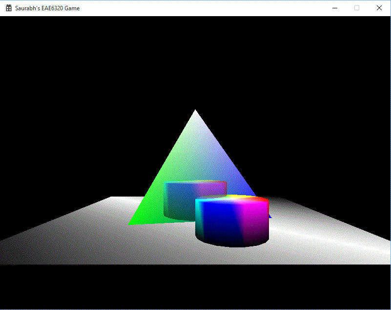

This assignment, we expand into the 3D realm. Last assignment, the mesh files were written by hand, and it is a tedious task for just a small pyramid. Imagine creating a mesh file for an object of say, 100 vertices. To avoid this, we created a Maya exporter. This allows us to model meshes in Maya and then export it in our human readable format. Also new this time is the ability to create transparent objects. This is achieved through alpha blending. More on that later. The output can be seen alongside. The pyramid is behind the transparent cylinder which is behind the opaque cylinder.

We had to install the Maya SDK, to interact with Maya. That part was already done by John-Paul’s code. We modified that code, to create human readable mesh files with our own format. This project does not depend on any other project and no other project depends on this project. One might argue that BuildAssets project requires MayaMeshExporter so that the meshes which are generated will be built. But, these meshes are externally generated and we have no control over exporting them from inside Visual Studio. So if Exporter is not built, the mesh file will not be there and the building will return an error.
To export, the built plugin must be loaded in to Maya. It is shown in the image to the right. This allows us to even debug the exporter code. For that, the Debug version of the plugin must be loaded, as seen in the same diagram. To debug, you need to attach Visual Studio Debugger to the Maya process and then when you export, it will trigger breakpoints, if any.
We introduce the concept of Render States to make things easier for future assignments and for this assignment to render transparent objects. Render States can be described as different functionalities our graphics code can perform such as Alpha Blending, Depth Testing, Face Culling etc. We store these states in the effect file. They are stored as Booleans as shown. It is this way as it makes human readable and easy to understand.
In code, they are represented as bits. We use bit-flags and enums to encode render states. In this method, every bit in an unsigned integer represents one render state. So we can fit as much as eight render states in one 1 byte unsigned integer.
You can also see the corresponding render state integer in the two binary effect files. First shows 0x0E which means Alpha blending is off and depth writing, depth checking and face culling is on. Second image shows 0x0B, which means Depth writing is off and alpha blending, depth checking and face culling is on.
Alpha blending takes into account the non zero alpha value to draw transparent objects. By the algorithm which we use, the transparent objects have to be drawn after the opaque objects are drawn. This is explained in the steps below.
Time Estimate
Reading: 1 hour
Coding: 3 hours
Debugging: 1 hour
Writeup: 1 hour
Download Links
Download Direct3D
Download OpenGL